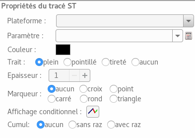
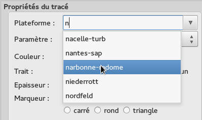
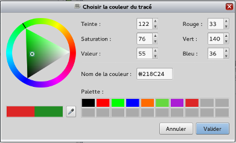

Configurer un tracé ST (série temporelle)

Plateforme :
le menu déroulant de sélection de la plateforme propose un mode de sélection avancé. Pour cela, entrer la ou les premières lettres de la plateforme pour n'avoir que les plateformes correspondantes proposées, comme l'illustre l'image ci-dessous :

Paramètre : le menu déroulant de sélection d'un paramètre se présente en cascade à 3 niveaux :
Noter : lorsque la liste des paramètres est très longue, on peut utiliser les touches de défilement des pages pour facilter la recherche.
Calculette : cf § Opération sur les données.
Couleur :
cliquer sur le bouton pour ouvrir la boîte de sélection des couleurs :

Trait : Texture du tracé : si aucun est sélectionné le tracé est invisible sauf si un marqueur a été choisi.
Epaisseur : Epaisseur du tracé.
Marqueur : Vista permet de tracer à l'aide de marqueurs, visibles lorsque le paramètre trait est positionné à aucun.
Affichage conditionnel :  cf § Affichage conditionnel.
cf § Affichage conditionnel.
Cumul :
Vista propose 2 comportements pour la fonction cumul en cas de données manquantes :
-sans raz : le cumul est conservé
-avec raz : le cumul est remis à zéro à chaque valeur manquante.